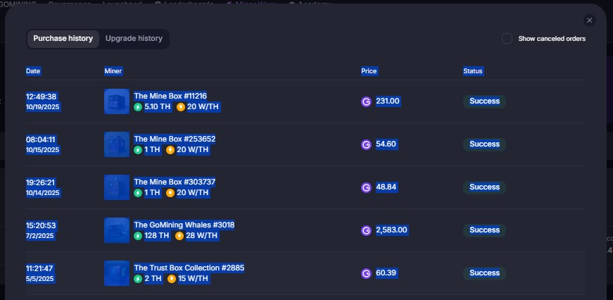
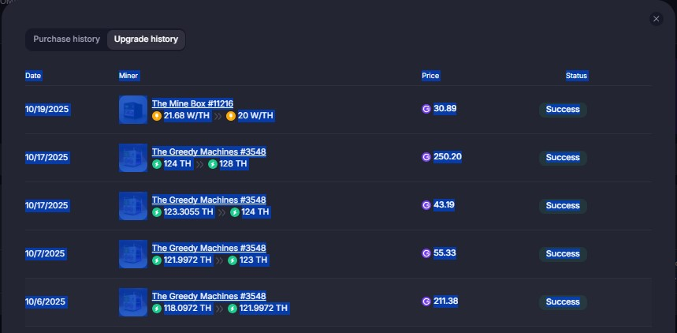
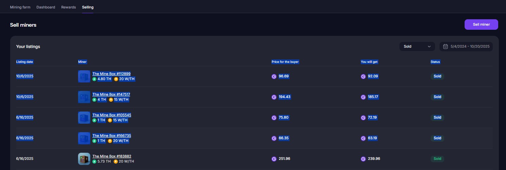

content_copy How to Copy Your GoMining Data: Step-by-Step
1
Go to your Mining Farm overview on GoMining.
2
Click on Purchase History. Mark all visible entries on the page like in the screenshot, then copy them (Ctrl+C or Cmd+C).

Repeat for every page if there are multiple pages.
3
Paste the copied data into the Purchase Input field in the import tool.
4
Switch to Upgrade History in GoMining. Again, select all entries (all pages), copy them, and paste into the Upgrade Input field in the tool.

5
Go to the Selling tab in your Mining Farm. Set the date filter to the maximum range and (optionally) filter for "Sold". Select all entries (all pages), copy, and paste into the Selling Input field in the tool.

Tip: Always select and copy all pages for each tab (Purchase, Upgrade, Selling). You can repeat this process as often as you like. Duplicate entries are automatically detected and ignored!
Back to the import page:
arrow_back Back to Import